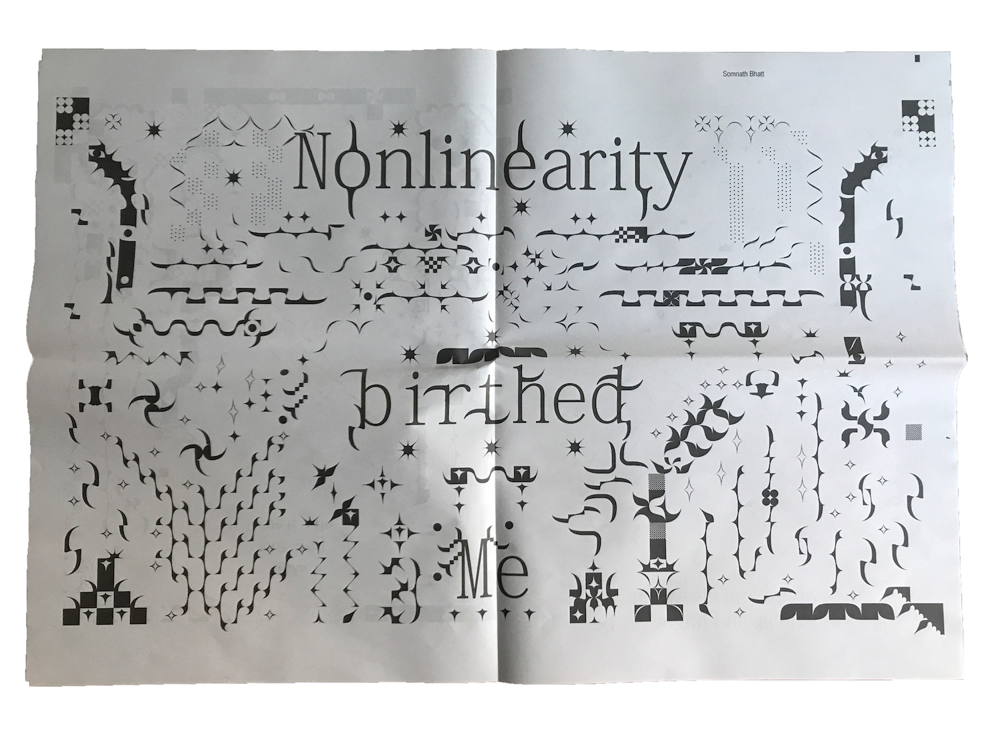
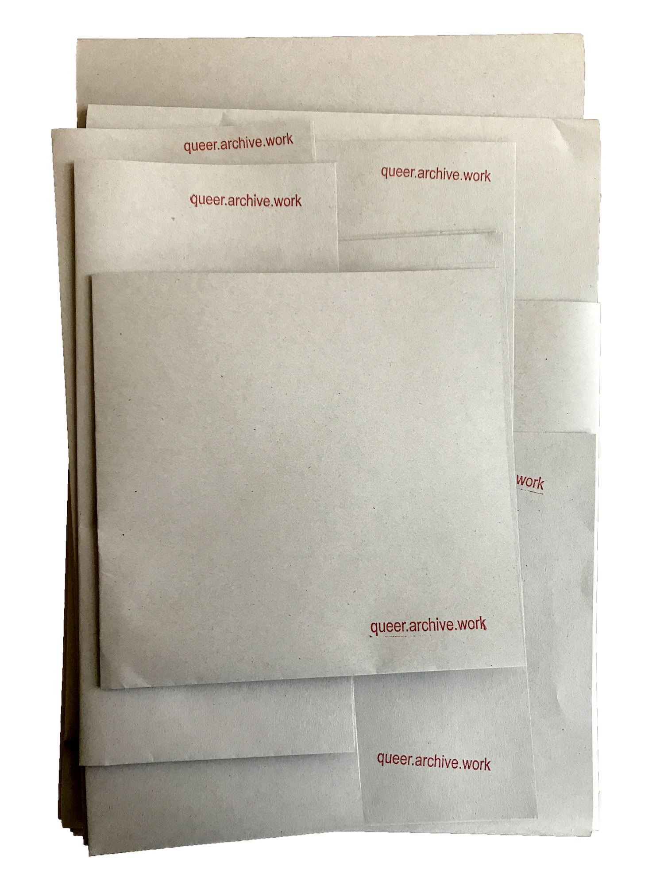
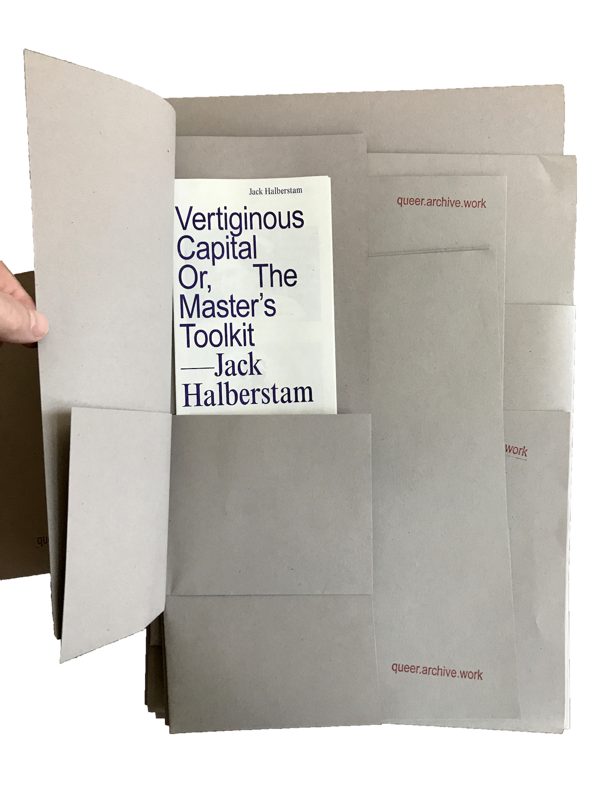
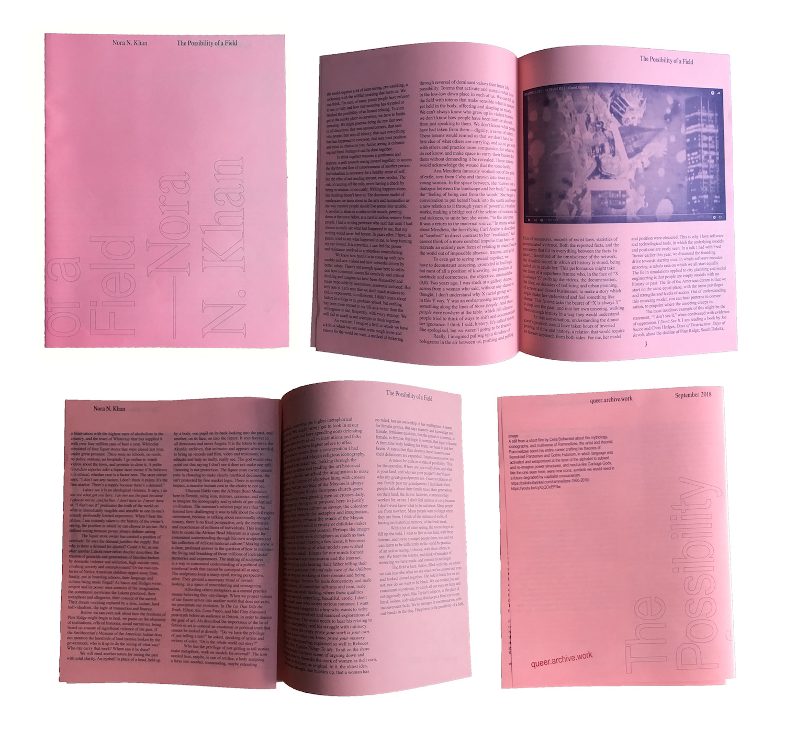
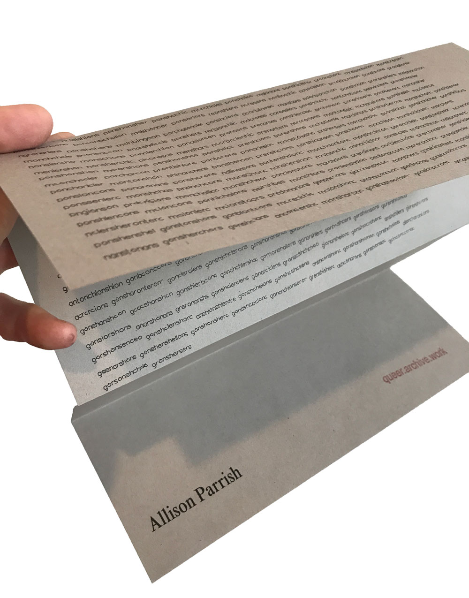
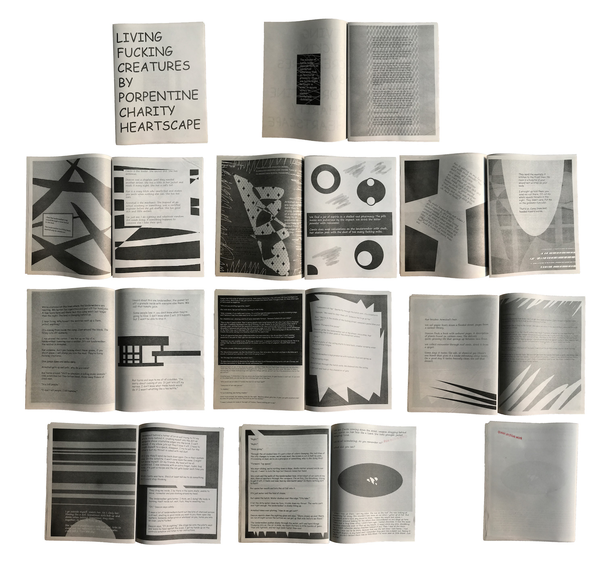
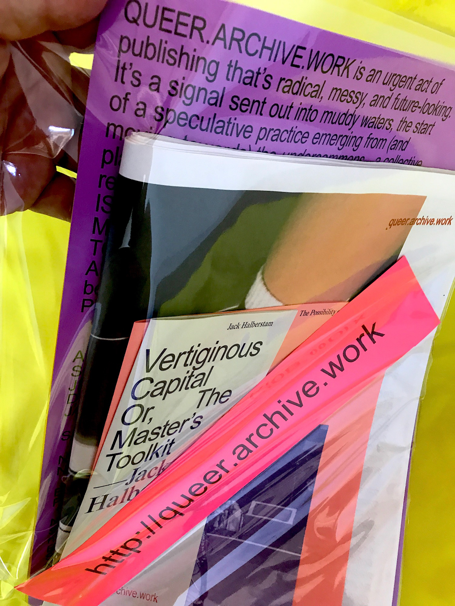

soulellis.com / work / QUEER. ARCHIVE. WORK
QUEER.ARCHIVE.WORK (2018)

Top: Unity, Nate Pyper / Bottom: nicole killian, American Artist
QUEER.ARCHIVE.WORK is an urgent act of publishing that’s radical, messy, and future-looking. It’s a signal sent out into muddy waters, the start of a speculative practice emerging from (and moving towards) the undercommons—a collective place for subversive artists and writers who reject normative narratives. THIS PUBLICATION IS A LOOSE ASSEMBLING OF QUEER METHODOLOGIES, WITH A PARTICULAR VIEW TOWARDS NETWORK CULTURE, FAILURE, AND REFUTATION. It’s an attempt to move far beyond the printed web. IT’S AN EXPERIMENT IN PUBLISHING AS PRACTICE AS RESISTANCE. Edited by Paul Soulellis in Pawtucket, RI.

Somnath Bhatt
ISSUE #1 includes several artifacts: a 36-page print-on-demand broadsheet newspaper surrounded by separate risograph-printed pieces—
—a 20-page zine
—a 12-page zine
—an 8-page zine
—two double-sided posters
—a small print
—a fold-out sheet (v1.1)
—a title sheet
—a URL title card
Download digital edition (38.5MB ZIP)
Project site: https://queer.archive.work
P2P at: dat://queer.hashbase.io



Nothing in issue #1 is bound. No staples, glue, or tape. The nine parts of the publication use folding, nesting, and enveloping as techniques of association. Sheets may be pulled out and rearranged, encouraging new juxtapositions and relationships each time it’s read.

Nora N. Khan
ISSUE 1 CONTRIBUTORS American Artist, Somnath Bhatt, Jeffrey Cheung and Gabriel Ramirez (Unity Press), Demian DinéYazhi´, Jack Halberstam, shawné michaelain holloway, Nora N. Khan, nicole killian, Be Oakley (GenderFail), Allison Parrish (ISSUE 1.1), Porpentine Charity Heartscape, Nate Pyper, and Sal Randolph.

Jack Halberstam
Print edition of 300 launched at NY and Boston Art Book Fairs, Sept-Oct 2018. Version 1.1 (edition of 60) featured at NY Tech Zine Fair, December 2018.

Allison Parrish (included in v1.1)
“Publishing as practice as resistance,” a talk presented at the Boston Art Book Fair on October 13, 2018.

Porpentine Charity Heartscape
